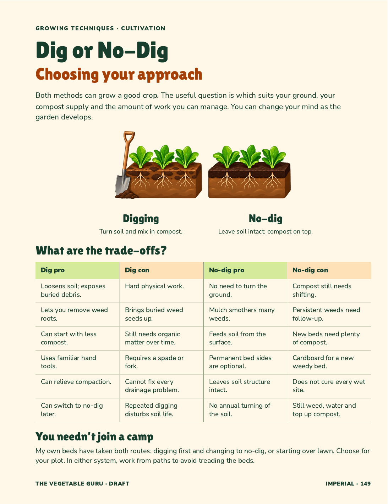
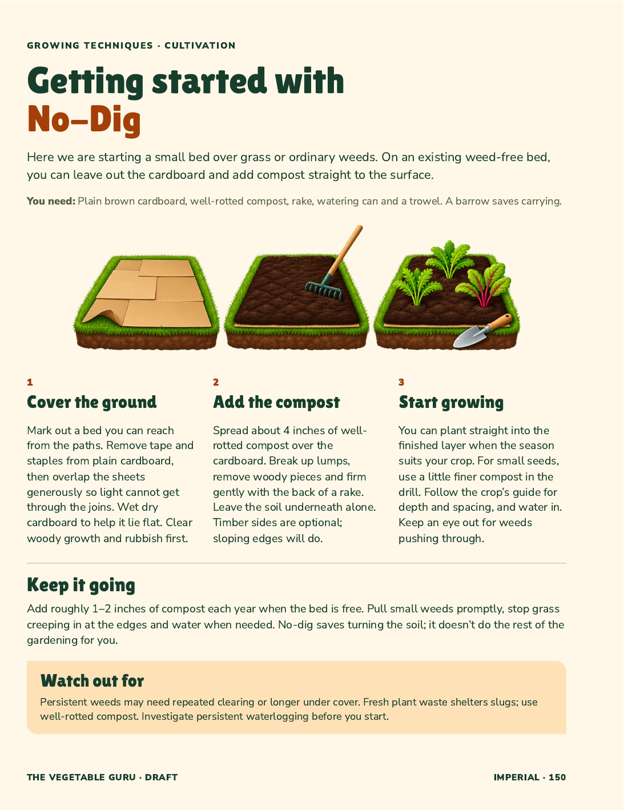
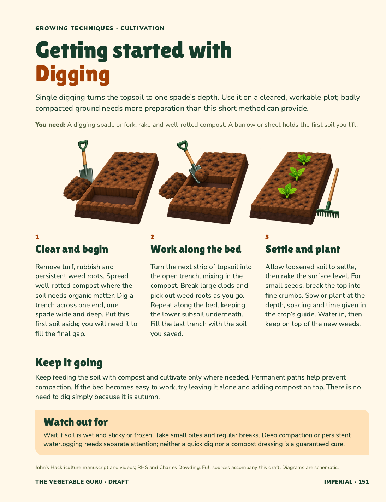

The Vegetable Guru · Growing Techniques
Three pages: a balanced comparison, followed by a practical page for each method. The comparison now has four columns: Dig pro, Dig con, No-dig pro and No-dig con. The two method pages are unchanged.
Draft copy, artwork and layout for review. Proposed folios 149–151; the two method pages face. Contents integration and full-book assembly follow review.



Carrot and Beetroot are approved style sources. The soil and tool drawings are new proposals. The paired comparison was revised to show equally healthy roots in both methods.
Bold colour planes, dimensional shapes and clear highlights.
Approved compact how-to pages
Earlier crop-supports draft, retained as a separate test